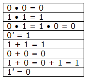
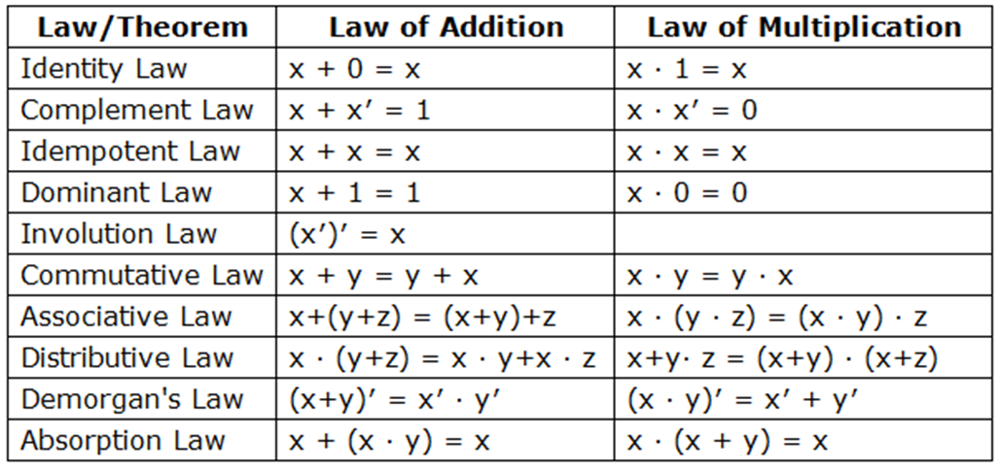

Boolean Algebra
Boolean algebra is an algebric structure defined on a set of elements together with two binary operators (+) and (.)
- A variable is a symbol, for example Α,used to represent a logical quantity, whose value can be 0 or 1.
- The complement of a variable is the inverse of a variable and is represented by an over bar, for example .
- A literal is a variable or the complement of a variable.
Closure: For any x and y in the alphabet A, x + y and x.y are also in A.
Boolean Value
The value of Boolean variable can be either 1 or 0.
Boolean Operators
There are four Boolean operators
- AND (∙) operator (A.B)
- OR (+) operator (A + B)
- NOT operator
- XOR (⊕) operator
Operator Precedence
The operator for evaluating Boolean expression is
- Paranthesis
- NOT
- AND
- OR
Duality
If an expression contains only the operations AND, OR and NOT. Then, the dual of that expression is obtained by replacing each AND by OR, each OR by AND, all occurrences of 1 by 0, and all occurrences of 0 by 1. Principle of duality is useful in determining the complement of a function.
Logic expression: (x •y' •z) + (x •y •z' ) + (y •z) + 0 ,
Duality of above logic expression is: (x + y' + z) • (x + y + z' ) • (y + z) • 1
Boolean Function
- Any Boolean functions can be formed from binary variables and the Boolean operators •, +, and ' (for AND, OR, and NOT, respectively).
- For a given value of variable, the function can take only one value either 0 or 1.
- A Boolean function can be shown by a truth table. To show a function in a truth table we need a list of the 2ncombinations of 1's and 0's of the n binary variables and a column showing the combinations for which the function is equal to 1 or 0. So, the table will have 2nrows and columns for each input variable and tile final output.
- A function can be specified or represented in any of the following ways:
- A truth table
- A circuit
- SOP (Sum Of Products)
- POS (Product of Sums)
- Canonical SOP
- Canonical POS
- Important Boolean operations over Boolean values:

Table of Some Basic Theorems:
